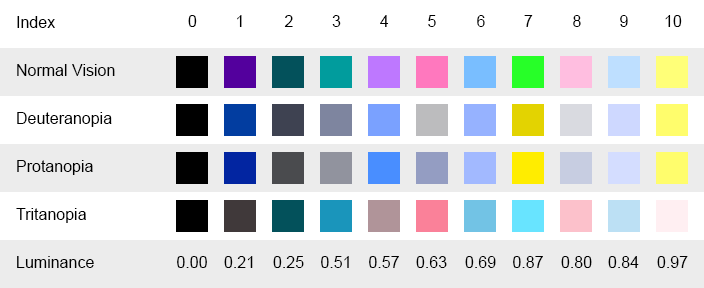

VisionUtility.GetColorBlindSafePalette
public static int GetColorBlindSafePalette
(Color[] palette,
float minimumLuminance,
float maximumLuminance);
参数
| palette | 用于填充调色板的颜色的数组。 |
| minimumLuminance | 可允许的最小感知亮度为 0 到 1。对于深色背景，建议使用 0.2 或更大值。 |
| maximumLuminance | 可允许的最大感知亮度为 0 到 1。对于浅色背景，建议使用 0.8 或更小值。 |
返回
int 调色板中明确的颜色的数量。
描述
获取对于正常视力、绿色盲、红色盲和蓝色盲来讲均可辨识的颜色的调色板。

绘制时使用的一组颜色及其感知亮度值。
在将调色板传递给此方法之前先为其分配大小，以指定所需的颜色数量。返回值表示调色板中所含明确的颜色的数量。如果该值小于调色板的大小，则调色板按顺序重复颜色。 “用于预览样本的窗口，这些样本在大多数视觉条件下都应该可辨识的。”
“用于预览样本的窗口，这些样本在大多数视觉条件下都应该可辨识的。”
将以下脚本作为 ColorSwatchExample.cs 添加到 Assets/Editor，并导航至菜单选项 Window > Color Swatch Example。
using UnityEditor; using UnityEngine; using UnityEngine.Accessibility;
public class ColorSwatchExample : EditorWindow { // size of swatch background textures to generate private const int k_SwatchTextureSize = 16; // the maximum number of swatches for this example private const int k_MaxPaletteSize = 10;
[MenuItem("Window/Color Swatch Example")] private static void CreateWindow() { var window = GetWindow<ColorSwatchExample>(); window.position = new Rect(0f, 0f, 400f, 80f); }
// the background textures to use for the swatches private Texture2D[] m_SwatchBackgrounds = new Texture2D[k_MaxPaletteSize];
// the desired number of swatches [SerializeField] private int m_PaletteSize = 8; // the range of desired luminance values [SerializeField] private Vector2 m_DesiredLuminance = new Vector2(0.2f, 0.9f); // the colors obtained [SerializeField] private Color[] m_Palette; // the number of unique colors in the palette before they repeat [SerializeField] private int m_NumUniqueColors;
// create swatch background textures when window first opens protected virtual void OnEnable() { titleContent = new GUIContent("Color Swatches");
// create background swatches with different patterns for repeated colors m_SwatchBackgrounds[0] = CreateSwatchBackground(k_SwatchTextureSize, 0, 0); m_SwatchBackgrounds[1] = CreateSwatchBackground(k_SwatchTextureSize, 1, 4); m_SwatchBackgrounds[2] = CreateSwatchBackground(k_SwatchTextureSize, 1, 3); m_SwatchBackgrounds[3] = CreateSwatchBackground(k_SwatchTextureSize, 6, 1); m_SwatchBackgrounds[4] = CreateSwatchBackground(k_SwatchTextureSize, 4, 3); m_SwatchBackgrounds[5] = CreateSwatchBackground(k_SwatchTextureSize, 6, 6); m_SwatchBackgrounds[6] = CreateSwatchBackground(k_SwatchTextureSize, 4, 2); m_SwatchBackgrounds[7] = CreateSwatchBackground(k_SwatchTextureSize, 6, 4); m_SwatchBackgrounds[8] = CreateSwatchBackground(k_SwatchTextureSize, 2, 5); m_SwatchBackgrounds[9] = CreateSwatchBackground(k_SwatchTextureSize, 1, 2);
UpdatePalette(); }
// clean up textures when window is closed protected virtual void OnDisable() { for (int i = 0, count = m_SwatchBackgrounds.Length; i < count; ++i) DestroyImmediate(m_SwatchBackgrounds[i]); }
protected virtual void OnGUI() { // input desired number of colors and luminance values EditorGUI.BeginChangeCheck();
m_PaletteSize = EditorGUILayout.IntSlider("Palette Size", m_PaletteSize, 0, k_MaxPaletteSize);
float min = m_DesiredLuminance.x; float max = m_DesiredLuminance.y; EditorGUILayout.MinMaxSlider("Luminance Range", ref min, ref max, 0f, 1f); m_DesiredLuminance = new Vector2(min, max);
if (EditorGUI.EndChangeCheck()) { UpdatePalette(); }
// display warning message if parameters are out of range if (m_NumUniqueColors == 0) { string warningMessage = "Unable to generate any unique colors with the specified luminance requirements."; EditorGUILayout.HelpBox(warningMessage, MessageType.Warning); } // otherwise display swatches in a row else { using (new GUILayout.HorizontalScope()) { GUILayout.FlexibleSpace(); Color oldColor = GUI.color;
int swatchBackgroundIndex = 0; for (int i = 0; i < m_PaletteSize; ++i) { // change swatch background pattern when reaching a repeated color if (i > 0 && i % m_NumUniqueColors == 0) ++swatchBackgroundIndex;
Rect rect = GUILayoutUtility.GetRect(k_SwatchTextureSize * 2, k_SwatchTextureSize * 2); rect.width = k_SwatchTextureSize * 2;
GUI.color = m_Palette[i]; GUI.DrawTexture(rect, m_SwatchBackgrounds[swatchBackgroundIndex], ScaleMode.ScaleToFit, true); }
GUI.color = oldColor; GUILayout.FlexibleSpace(); } } }
// create a white texture with some pixels discarded to make a pattern private Texture2D CreateSwatchBackground(int size, int discardPixelCount, int discardPixelStep) { var swatchBackground = new Texture2D(size, size); swatchBackground.hideFlags = HideFlags.HideAndDontSave; swatchBackground.filterMode = FilterMode.Point;
var pixels = swatchBackground.GetPixels32(); int counter = 0; bool discard = false; for (int i = 0, count = pixels.Length; i < count; ++i) { pixels[i] = new Color32(255, 255, 255, (byte)(discard ? 0 : 255)); ++counter; if (discard && counter == discardPixelCount) { discard = false; counter = 0; } else if (!discard && counter == discardPixelStep) { discard = true; counter = 0; } } swatchBackground.SetPixels32(pixels);
swatchBackground.Apply(); return swatchBackground; }
// request new palette private void UpdatePalette() { m_Palette = new Color[m_PaletteSize]; m_NumUniqueColors = VisionUtility.GetColorBlindSafePalette(m_Palette, m_DesiredLuminance.x, m_DesiredLuminance.y); } }